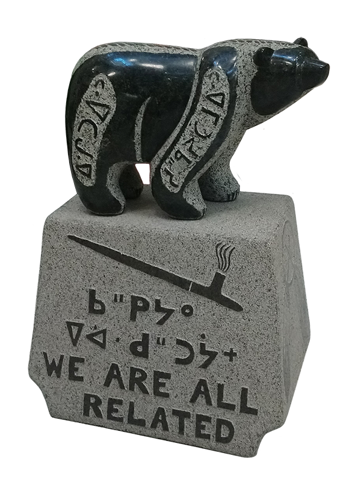

<!doctype HTML>
<html>
<script src="https://aframe.io/releases/0.6.1/aframe.min.js"></script>
<script src="https://cdn.rawgit.com/jeromeetienne/AR.js/1.5.0/aframe/build/aframe-ar.js"> </script>
  <body style='margin : 0px; overflow: hidden;'>
    <a-scene embedded arjs>
  	<a-marker preset="hiro">
            <a-box position='0 0.5 0' material='color: black;'></a-box>
	
	    <!-- Load a Texture
	    <a-assets>
    		
  	    </a-assets> -->

	    <!-- Textured plane parallel to ground.
            <a-plane src="#test" height="80" width="60" rotation="0 0 0"></a-plane> -->
		
		
  	</a-marker>
  	<a-entity camera></a-entity>
    </a-scene>
  </body>
</html>
